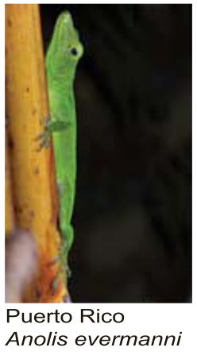
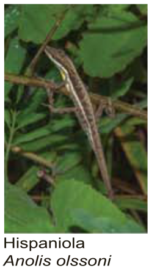
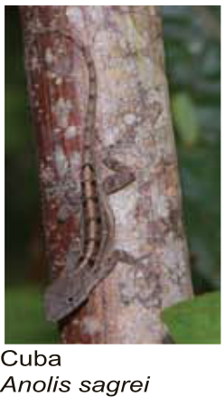
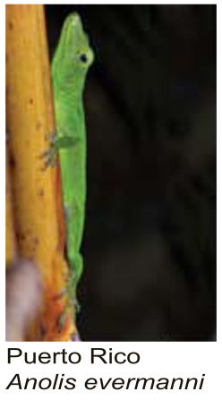
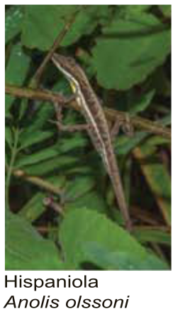
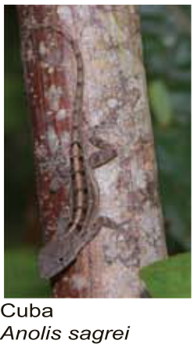
Audiência: Alunos de ensino médio.
Habilidades necessárias: Conhecimento básico da teoria da evolução e biologia molecular.
O objetivo dessa atividade é apresentar ao aluno a filogenia como um método objetivo para entender a evolução e dispersão de espécies.
Utilizando um exemplo com lagartos do gênero Anolis, o aluno vai produzir uma filogenia baseada em características e depois outra filogenia baseada no DNA mitocondrial para então tentar entender como foi a dispersão e evolução destes lagartos nas ilhas caribenhas.
Em biologia, filogenia é o estudo da relação evolutiva entre organismos, inicialmente baseado somente nas características dos indivíduos (características morfológicas, comportamentais), mas com o advento das tecnologias de sequenciamento, ela mudou bastante com essa essa nova fonte de dados.
Para entender melhor o que a bilogia molecular introduziu no estudo da filogenia, vamos ver um exemplo sobre os simpáticos lagartos do gênero Anolis.
As mais de 700 ilhas caribenhas hospedam em torno de 150 espécies de lagartos do gênero Anolis, que ocupam diversos habitats habitat é onde uma espécie mora, no chão, nas árvores, etc e nichos é a combinação de onde a espécie mora com sua profissão, se ela é caçadora ou coletora.
Além de meramente um exemplo, pesquisar esses lagartos é uma forma de enriquecer nossa compreensão sobre os processos evolutivos, como a adaptação pela seleção natural, evolução e a formação de novas espécies. Além de ajudar a entender como e porque existem tantas espécies diferentes, de tantos tipos de organismos vivendo na Terra.
Daniel Rabosky e Richard Glorc, dois pesquisadores dos Estados Unidos realizaram um estudo com as espécies caribenhas do gênero Anolis e viram que podiam classificá-las em seis principais nichos de acordo com suas características físicas (morfologia) e habitats que ocupavam.
Ou seja, essas várias espécies de Anolis, se dividem nos espaços que ocupam. Muitos são os processos naturais que geram essas divisões, mas de forma bem simples, podemos pensar que ao apresentarem nichos diferentes, as espécies tendem a não competirem entre si, já que se alguns lagartos estão na copa das árvores e outros na base, eles nunca vão se encontrar, assim nunca precisam lutar por comida por exemplo, já que cada um vai se caçar no ambiente que vive, no seu nicho.
| 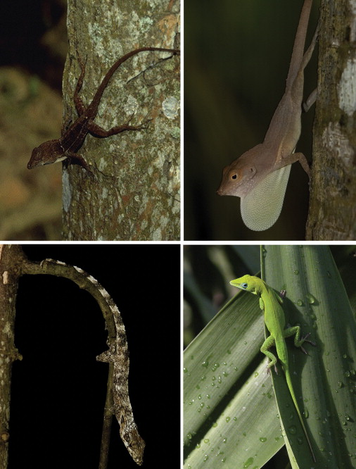 | 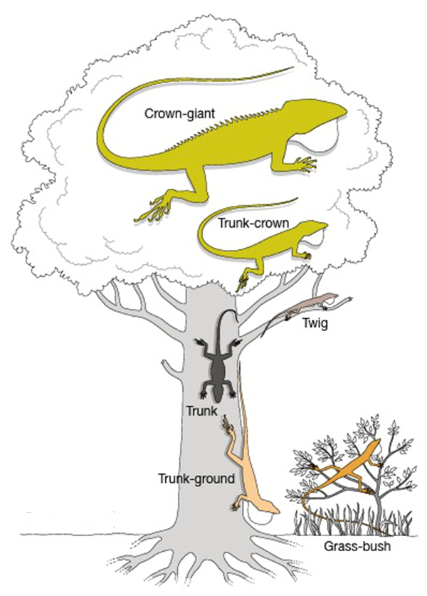 |
| Nicho | Tamanho do corpo | Tamanho dos membros | Almofada do dedo do pé | Tamanho da Calda | Cor | Habitat |
|---|---|---|---|---|---|---|
| Crown-giant | 130-191 mm | Pequeno | Grande | Longo | Geralmente verde | Troncos e galhos altos |
| Trunk-crown | 44-84 mm | Pequeno | Muito grande | Longo | Verde | Troncos, ramos e folhas |
| Trunk | 40-58mm | Intermediário | Intermediário | Pequeno | Cinza | Troncos |
| Twig | 41-80mm | Bem curto | Pequeno | Pequeno | Cinza | Ramos finos |
| Trunk-ground | 55-79mm | Longo | Intermediário | Longo | Marrom | Troncos perto do solo e chão |
| Grass-bush | 33-51mm | Longo | Intermediário | Muito longa | Marrom | Arbustos e gramas |
Mas vendo esses grupos, podemos gerar algumas hipóteses do porque podemos achar os tantos nichos em cada uma das ilhas caribenhas.
Para ajudar a decidir qual das hipóteses deve ser verdadeira, podemos olhar as características das espécies e suas sequências de DNA para melhor compreender as relações evolutivas entre as espécies de Anolis.
Primeiro, vamos tentar identificar os nichos dos Anolis, lembra que Daniel Rabosky e Richard Glorc trabalharam as espécies caribenhas? Bem, separamos aqui 16 espécies para tentar entender melhor como a filogenia pode nos ajudar, mas antes, arrastando com o mouse as fotos das espécies para dentro dos seu respectivo quadrado, quatro fotos para cada quadrado, veja se você acha fácil encaixar cada espécie no seu quadrado.
Aqui vamos começar trabalhando somente no "olhômetro" mesmo. Você acha que consegue separar essas espécies? Você pode começar olhando onde as espécies estão (seu habitat) e suas cores (morfologia) e tentar arrastar de acordo com o a descrição do grupo.
|
Troncos, próximo a copa das árvores (Trunk-crown) |
Troncos, próximo ao solo (Trunk-ground) |
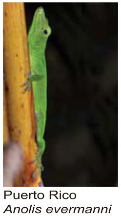
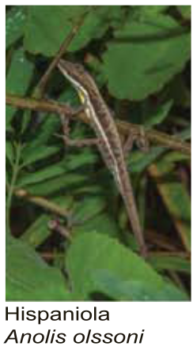
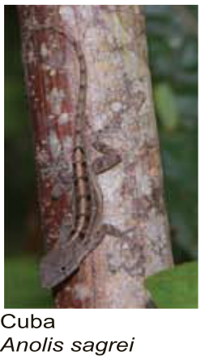
|
Galhos finos e ramos (Twig) |
Gramas e arbustos (Grass-bush) |
Certo, talvez a primeira coisa que você deve pensar aqui é, o que estou fazendo? Usar um critério como “olhômetro” é extremamente subjetivo, provavelmente, se você comparar com outra pessoa como está separando as espécies, vai chegar a uma conclusão diferente que seu colega do lado, e isso é muito ruim, porque desta forma, diferentes pessoas nunca vão concordar sobre a evolução dos lagartos Anolis, e pior que isso, conclusões erradas podem nos levar a decisões erradas.
Pense por um momento, se você fosse responsável pela conservação dessas espécies de Anolis, se a hipótese 1 for a mais próxima da realidade, talvez não seja um problema, levar espécies de um determinado nicho de uma ilha para outro, já que isso já deve ter acontecido antes na história evolutiva desses lagartos, agora se a hipótese 2 for a mais próxima da realidade, isso pode ser ruim, pois estamos introduzindo uma espécie invasora numa ilha que só teve uma espécie original.
Mas a filogenia vai servir exatamente para retirar essa subjetividade que está nos deixando com uma pulga atrás da orelha. Vamos abandonar o "olhômetro" e vamos usar as características das espécies de Anolis para explorar a sua evolução.
As características que estamos nos referindo são as características da tabela abaixo.
| Espécie | Tamanho máximo do corpo | Tamanho dos membros | Almofada do dedo do pé | Tamanho da calda | Cor |
|---|---|---|---|---|---|
| Anolis alutaceus | 51mm | Longo | Intermediário | Muito longo | Marrom |
| Anolis angusticeps | 80mm | Muito curto | Pequeno | Curto | Cinza |
| Anolis chlorocyanus | 84mm | Pequeno | Muito grande | Longo | Verde |
| Anolis cristatellus | 79mm | Longo | Intermediário | Longo | Marrom |
| Anolis cybotes | 79mm | Longo | Intermediário | Longo | Marrom |
| Anolis evermanni | 84mm | Pequeno | Muito grande | Longo | Verde |
| Anolis grahami | 84mm | Pequeno | Muito grande | Longo | Verde |
| Anolis lineatopus | 79mm | Longo | Intermediário | Longo | Marrom |
| Anolis occultus | 80mm | Muito curto | Pequeno | Curto | Cinza |
| Anolis olssoni | 51mm | Longo | Intermediário | Muito longo | Marrom |
| Anolis ophiolepis | 51mm | Longo | Intermediário | Muito longo | Marrom |
| Anolis porcatus | 84mm | Pequeno | Muito grande | Longo | Verde |
| Anolis pulchellus | 51mm | Longo | Intermediário | Muito longo | Marrom |
| Anolis sagrei | 79mm | Longo | Intermediário | Longo | Marrom |
| Anolis shelpani | 80mm | Muito curto | Pequeno | Curto | Cinza |
| Anolis valencienni | 80mm | Muito curto | Pequeno | Curto | Cinza |
Podemos usar um método de agrupamento baseado nas características das espécies acima para agrupá-las. A vantagem dessa abordagem é que retiramos um pouco da subjetividade de quando estávamos agrupando as espécies apenas pela aparência e agora usamos um conjunto de suas características.
Agora faça o seguinte:
Para usar o método de agrupamento que queremos, primeiro precisamos pegar transformar os dados da tabela de características dos lagartos em dados numéricos, podemos usar o seguinte critério:
Tamanho dos membros:
Almofada do dedo do pé:
Tamanho da calda:
Cor:
Vamos organizar ainda os dados num formato parecido com o formato fasta, temos o simbolo ">" seguido de um identificador, aqui o nome da espécie e então os dados transformados pelos nossos critérios acima.
>Anolis_alutaceus
51 2 1 2 0
>Anolis_angusticeps
80 0 0 0 1
>Anolis_chlorocyanus
84 1 2 1 2
>Anolis_cristatellus
79 2 1 1 0
>Anolis_cybotes
79 2 1 1 0
>Anolis_evermanni
84 1 2 1 2
>Anolis_grahami
84 1 2 1 2
>Anolis_lineatopus
79 2 1 1 0
>Anolis_occultus
80 0 0 0 1
>Anolis_olssoni
51 2 1 2 0
>Anolis_ophiolepis
51 2 1 2 0
>Anolis_porcatus
84 1 2 1 2
>Anolis_pulchellus
51 2 1 2 0
>Anolis_sagrei
79 2 1 1 0
>Anolis_shelpani
80 0 0 0 1
>Anolis_valencienni
80 0 0 0 1
Veja que conseguimos agrupar as espécies baseadas em suas características, e de uma forma muito menos subjetiva que no “Olhometro”, como na nossa primeira tentativa, baseado nas imagens. Como o agrupamento é baseado em uma matriz de dados, sempre chegamos ao mesmo resultado, mas se você pensar bem, ainda temos um certo nível de subjetividade aqui, que é a escolha de quais características olhar, o que medir?
Podemos medir o tamanho dos membros, ou olhar as cores, mas poderíamos usar outras características como o tamanho das garras, o tamanho da boca, o tamanho da cabeça, enfim, podemos ficar aqui discutindo para sempre quais características usar para comparar as espécie para sempre, mas existe algo que podemos olhar que com certeza vai refletir como ocorreu a evolução destas espécies, que é o DNA delas.
Então vamos ver como podemos usar as sequências de DNA para explorar a evolução dos Anolis, existem diversas ferramentas que podem nos ajudar para estudar filogenia. Mas aqui vamos utilizar o a página do PHYLOGENY.
As sequências que analisaremos estão disponíveis na internet no genbank. Mas podemos utilizar o arquivo Anolis com todas as sequências já prontas que deixamos pronto.
Hoje podemos sequenciar o DNA dos seres vivos de diversas forma, e a cada ano que passa, pagando menos, veja nesse arquivo aqui, como estão organizados as sequências de DNA espécies de Anolis.
Este arquivo serve para representar sequências de nucleotídeos ou de aminoácidos e encontra-se em um formato chamado de fasta. Um arquivo fasta inicia-se com o símbolo ">" juntamente com um identificador único, nas linhas seguintes temos as bases ou aminoácidos que representam a sequência de interesse.
Esse arquivo que estamos olhando inclui 16 sequências, sendo chamado de multifasta. As sequências que vemos aqui são uma parte do DNA Mitocondrial que pega o gene NADH dehydrogenase subunit 2 (ND2) e cinco tRNA (RNA). Esse gene é conservado o suficiente para ser usado para reconhecer espécies diferentes, mas bastante similar entre indivíduos da mesma espécie, assim, essa sequência pode ser comparada entre espécies para tentar determinar suas relações evolutivas.
Além das espécies caribenhas de Anolis, Leiocephalus barahonensis é incluído como um outgroup para servir de raiz e adicionar um ancestral que deve representar o ancestral mais antigo do grupo, do qual as espécies irradiaram.
Agora, que já vimos de onde vem as sequências de DNA, faça o seguinte:

Os números em vermelho na filogenia são o resultado do bootstraping, e nos dizem o quão confiantes devemos estar no programa sobre um determinado ramo da árvore:
Porém o nosso propósito aqui é ilustrar os princípios das comparações de sequências de DNA, não vamos nos preocupar tanto com isso agora.
Certo, agora temos nossa árvore filogenética baseado em sequências de DNA das espécies, mas ainda temos trabalho a fazer, não temos uma conclusão sobre como pode ter sido a evolução dessas espécies de lagartos.
De forma bem simples, a árvore filogenética nos mostra o quão próximos geneticamente nós somos, mais ou menos como as relações de parentesco, somos mais próximos do nosso irmão ou irmã do que dos nossos primos ou primas, mas como vamos ver isso nessa árvore?

Primeiro, veja que toda vez que juntamos qualquer duas espécies, por exemplo Anolis ophiolepis e Anolis sagrei, esperamos que no momento que eles se juntam nessa árvore, é porque existe um ancestral em comum, bem onde está apontando a seta na figura abaixo.
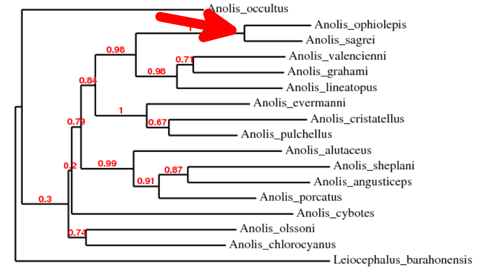Como só existe um ancestral em comum, podemos falar que eles são mais próximos evolutivamente, já que estão bem mais próximos entre eles ...
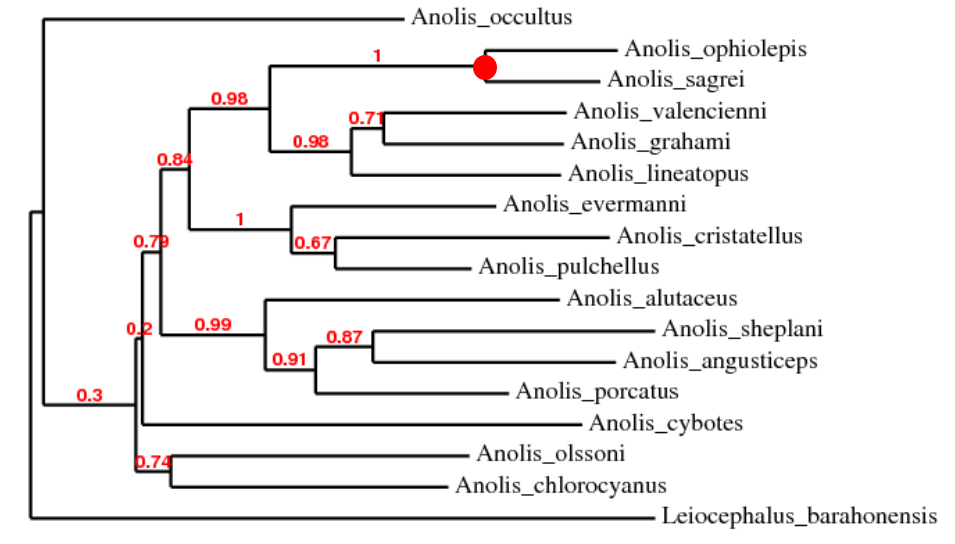Do que quando comparamos Anolis ophiolepis e Anolis angusticeps, porque veja que temos que percorrer uma grande distância na árvore filogenética, passar por vários ancestrais para chegar no ancestral comum dessas duas espécies.
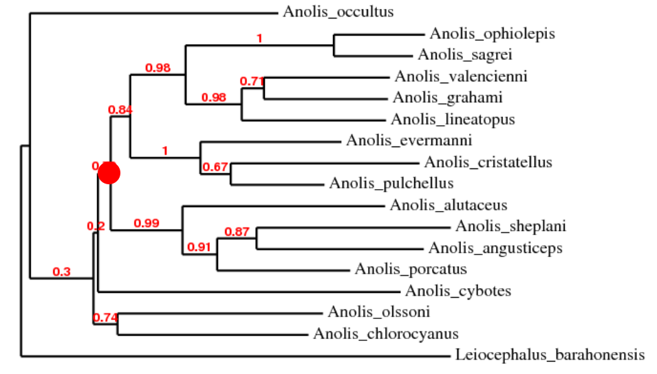Tentando fazer uma analogia, podemos dizer que Anolis ophiolepis e Anolis sagrei são como "irmãos" pois o ancestral em comum deles é um parente próximo, como um pai, enquanto Anolis ophiolepis e Anolis angusticeps são mais como "primos" distantes, pois o ancestral em comum deles é um tataravó. Essa talvez não seja uma boa analogia, já que estamos falando de espécies diferentes, mas o que interessa é a distância percorrida para chegar de uma espécie a outra, quanto maior for a distância, maior será a diferença genética entre as espécies.
Agora vamos colorir de duas formas diferentes a árvore filogenética para entender melhor a evolução dos lagartos Anolis.
Para colorir as árvores fazemos o seguinte:
Aqui temos uma tabela com a ilha e o nicho de cada espécie.
| Espécie | Ilha | Nicho |
|---|---|---|
| Anolis alutaceus | Cuba | Grass-bush |
| Anolis angusticeps | Cuba | Twig |
| Anolis chlorocyanus | Hispaniola | Trunk-crown |
| Anolis cristatellus | Puerto Rico | Trunk-ground |
| Anolis cybotes | Hispaniola | Trunk-ground |
| Anolis evermanni | Puerto Rico | Trunk-crown |
| Anolis grahami | Jamaica | Trunk-crown |
| Anolis lineatopus | Jamaica | Trunk-ground |
| Anolis occultus | Puerto Rico | Twig |
| Anolis olssoni | Hispaniola | Grass-bush |
| Anolis ophiolepis | Cuba | Grass-bush |
| Anolis porcatus | Cuba | Trunk-crown |
| Anolis pulchellus | Puerto Rico | Grass-bush |
| Anolis sagrei | Cuba | Trunk-ground |
| Anolis shelpani | Hispaniola | Twig |
| Anolis valencienni | Jamaica | Twig |
| Leiocephalus barahonensis | Outgroup | |
Vamos colorir cada ramo de acordo com a ilha de origem (Cuba, Hispaniola, Jamaica ou Puerto Rico).
Agora vamos colorir de acordo com o nicho, incluindo também outra legenda.
Baseado nas árvores coloridas, qual das hipóteses iniciais deve estar correta? Os nichos evoluíram uma vez e dispersaram para as diferentes ilhas ou cada ilha desenvolveu, a partir de algum ancestral comum, os diferentes nichos, considerando a filogenia das sequências de DNA.
Veja que quando olhamos a árvore com as espécies coloridas pelo local (cada ilha tem uma cor diferente), vemos que espécies que estão na mesma ilha são mais próximas filogeneticamente, são mais "aparentadas" entre si, já quando olhamos a árvore colorida por nicho, veja que sempre nichos iguais estão longe filogeneticamente um dos outros, isso nos leva a acreditar que os ancestrais dos Anolis chegaram as ilhas e depois se diversificaram em vários nichos, já que cada ilha tem indivíduos mais aparentados entre si.
Mas esse padrão não é tão perfeito assim, examine a relação entre Anolis shelplani e Anolis augusticeps. Eles obedecem a hipótese que houve primeiro a colonização das ilhas e depois a diversificação dos nichos? Podemos perceber que não, então a evolução não pode se resumir as nossas hipóteses iniciais, mas uma combinação das duas, onde houve uma dispersão e colonização das ilhas com posterior diversificação dos colonizadores nos diversos nichos, mas alguns ancestrais talvez tenham também colonizados novas ilhas, como vemos para Anolis shelplani e Anolis augusticeps.
Atividade retirada de:
Using DNA to Explore Lizard Phylogeny.
Raboskya D.L. e Glorc R.E. 2010 - Equilibrium speciation dynamics in a model adaptive radiation of island lizards PNAS 107(51):22178–22183.